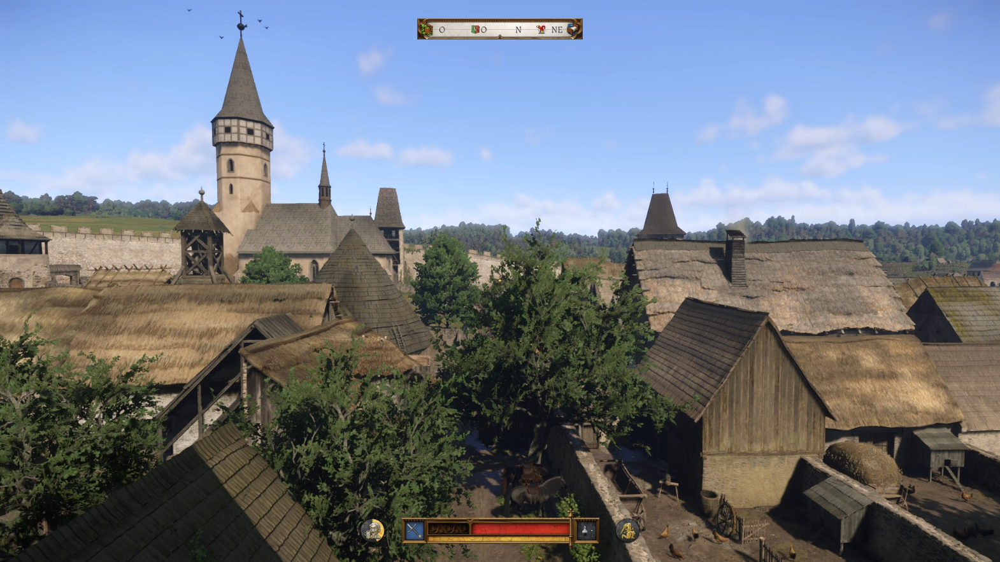
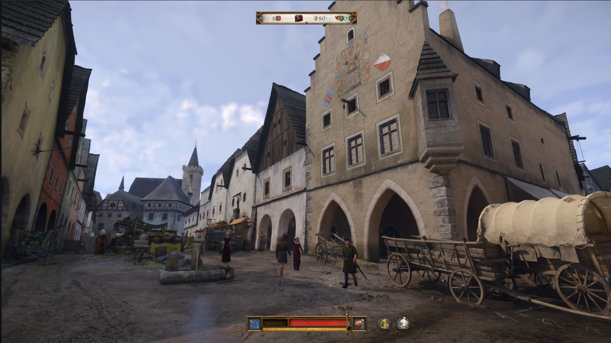

Assim como em Kingdom Come: Deliverance, o protagonista é Henry, filho de um ferreiro, que vive na Boêmia Central durante a Idade Média, no início do século XV.O enredo segue diretamente do final do jogo anterior,e se passa na "turbulência de uma guerra civil", onde Henry lutará contra o Sacro Imperador Romano Sigismundo e seus aliados.Isso concluirá sua história.
Quando diz o ditado quando ta bom um jogo, não precisa mudar nada, apenas melhorar, o Kingdom Come: Delivirance 2 é sobre esse ditado. Aprensetou uma melhoria no combate, o qual era um grande desafio para jogos novatos fazendo o tempo de resposta mais rapido para contra ataque.
Além disso o jogo ainda apresenta novas armas, como por exemplo crossbow, uma bombarda e uma haste, fazendo a mecânica de batalha ser diferente e com mais opção ao jogador para escolher. Tambem adicionou novos minigames que serve para o cotidiano ao jogador, para um dos melhores minigames foi fazer blacksmithing (ferraria em português) era uma coisa muito relaxante de fazer, e tinha varias opção.
A ultima mecânica que mais gostei foi de como a sua jogabilidade aumentava os pontos nas sua habilidades, se você utilizar mais espada você vai ganhar mais ponto na skill espada, resumindo quando descobri que poderia ganhar skill ate em cervejaria para fazer algumas quest sair mais facil, foi um upgrade comparado ao jogo anterior.
Para mim os gráficos do jogo apresentou uma excelente melhoria comparado com a sequência anterior, e além disso um critério que sempre acho legal nos jogos da Warhouse Studios é que a escala do mapa é sempre igual no mundo real, ou seja, a distância das vilas é igual e isso traz uma sensação muito boa ao jogar
Um outro fator é como fazer design das cidades e dos quartos, sempre foi muito, uma imagem abaixo que tirei foto jogando o jogo é a cidade Kuttenberg(Kutná Hora atual), que ficou muito bonita, sempre andava nela e assistia bastante design em local certo.
A trilha sonora foi bem colocada no jogo, conseguiu utilizar eles na cena exata, como por exemplo em um plot twist tocava uma trilha sonora de grandeza quando um personagem importante chegava, nas cenas de diversão/bares sempre tinha aquela musica legal de festa bem tocada.
A historia do jogo segue sendo perfeito, as quest secundarias são divertidas e bem recompensadas, já a principal conseguiram me prender do inicio ao fim, a minha sorte que no 2 ato consegui fazer todas quest secundarias, porque a quest principal me prendeu depois de um certo acontecimento no jogo.
Por fim a engine CryEngine funcionou muito bem, eu não tive problemas de perfomance no jogo rodando com uma 4060, eu só tive um bug pequeno, que quando lavei o meu cavalo, os aldeões perto acabaram falecendo e tive que voltar no save, porém voltar o save foi algo bem curto e não fez eu perder muito tempo de jogatina.
Kingdom Come: Deliverance II é uma evolução do primeiro jogo, trazendo melhorias em todos os aspectos sem perder sua identidade única.
Nota: 96
Voltar para a página principal